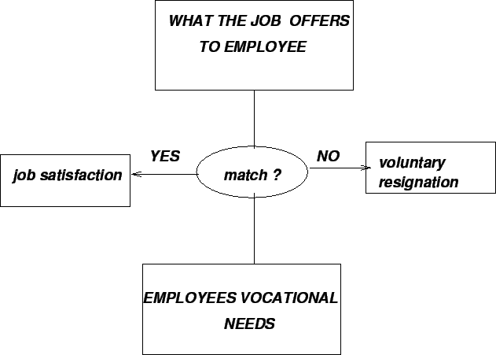

Next: Methods of Knowledge Transfer
Up: Prerequisites for Transfer
Previous: How Managers view Knowledge
Contents
The success of knowledge transfer and knowledge sharing relies on employee
job satisfaction and the stability of the workplace. Job satisfaction can
be derived from the degree of match between an employees vocational needs
and the requirements of the job.
Some key vocational needs:
- Level of Achievement
- Ability utilization
- Advancement
- Level of
Activity
- Authority
- Level of Creativity
- Compensation
- Independence
- Moral Values
- Level of responsibility
- Recognition
- Status
- Job Security
- Supervision (human relations)
- Supervision
(technical)
- Variety
- Conditions of Work
Figure 8.2:
Employees Job Satisfaction: A Conceptual Model
|

|
Knowledge Management Systems
2004-11-01